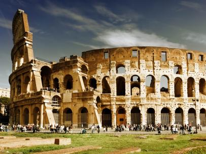

7 Wonders of World
Colosseum
Colosseum, Rome:
The Colosseum in Rome was built in the first century by order of the Emperor Vespasian. A feat of engineering, the amphitheater measures 620 by 513 feet (189 by 156 meters) and features a complex system of vaults. It was capable of holding 50,000 spectators, who watched a variety of events. Perhaps most notable were gladiator fights, though men battling animals was also common.

In addition, water was sometimes pumped into the Colosseum for mock naval engagements. However, the belief that Christians were martyred there—namely, by being thrown to lions—is debated. According to some estimates, about 500,000 people died in the Colosseum. Additionally, so many animals were captured and then killed there that certain species reportedly became extinct.